Laser ionization (Camilo Andrés Granados Buitrago, CERN)
Laser resonance ionization of neutral atoms is a powerful technique for the study and manipulation of atomic samples. A first laser interacts with the neutral atom bringing it from the ground state to an excited state with opposite parity. When excited, the neutral atom is finally ionized using a second laser which can remove an electron via an auto-ionizing state or towards the continuum, provided that the sum of the photon energies is greater than the ionization potential of the atom.
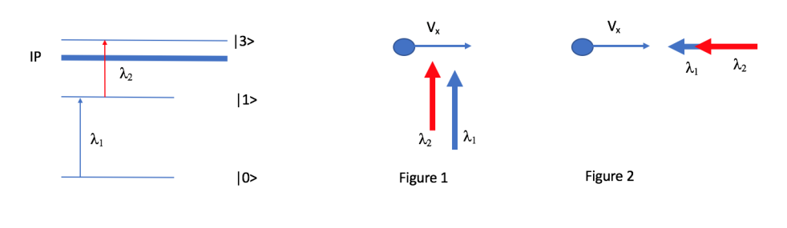
Figure 1 (left, energy level scheme) and Figure 2 (right, geometries of the laser beams relative to the atom velocity ).Questions:
-
Consider an atom of moving with a velocity . For the ionization process to take place the wavelength of the to transition of an atom at rest is . If the atom is moving with , calculate the value of the new wavelength in order to excite the neutral atom (permitting the transition to ) in:
(a) Figure 1
(b) Figure 2
(c) If now we consider an ensemble of atoms with a natural linewidth of for the state , confined in a hot cavity at , and the laser bandwidth is negligible, what is the:
- Einstein coefficient
- Atomic linewidth
(d) If the hyperfine splitting (consisting of 4 allowed transitions) for the ground state is and for the excited state is , how many resolved peaks will appear in the full HFS scan?
-
Imagine the same ensemble of atoms, this time moving in the same direction inside a supersonic gas-jet of velocity and length . What is the relation between the laser repetition rate and the velocity of the atoms in order to irradiate all the atoms in the ensemble?
Fonte: Testo (PDF) — p.2 Topic: Modern-Quantum Physics, Special Relativity Metodi: Photon Energy Relation, Lorentz Transformation, Statistical Averaging, Approximation & Series Expansion Competenze: Physical Reasoning, Mathematical Modeling Objects: Atom, Electron
Ionizzazione laser *(Camilo Andrés Granados Buitrago, CERN) *
L’ionizzazione a risonanza laser di atomi neutri è una potente tecnica per lo studio e la manipolazione di campioni atomici. Un primo laser interagisce con l’atomo neutro portandolo dallo stato di base a uno stato eccitato con parità opposta. Quando è eccitato, l’atomo neutro viene infine ionizzato utilizzando un secondo laser che può rimuovere un elettrone attraverso uno stato di auto-ionizzazione o verso il continuum, a condizione che la somma delle energie fotoniche sia maggiore del potenziale di ionizzazione dell’atomo.
Figura 1 (a sinistra, schema di livello di energia) e figura 2 (a destra, geometrie dei fasci laser rispetto alla velocità atomica ).
**Domande: **
- Considera un atomo di in movimento a velocità . Per il processo di ionizzazione, la lunghezza d’onda della transizione da a di un atomo in riposo è . Se l’atomo si muove con , calcolare il valore della nuova lunghezza d’onda per eccitare l’atomo neutro (permettendo la transizione a ) in:
a) Figura 1
b) Figura 2
(c) Se consideriamo ora un insieme di atomi con una larghezza naturale di linea di per lo stato , confinato in una cavità calda a , e la larghezza di banda laser è trascurabile, qual è la:
- Coefficiente Einstein
- Larghezza di linea atomica
(d) Se la divisione iperfina (che consiste in 4 transizioni consentite) per lo stato di base è e per lo stato eccitato è , quanti picchi risolti appariranno nella scansione completa HFS?
- Immaginate lo stesso insieme di atomi, questa volta in movimento nella stessa direzione all’interno di un gas-get supersonico di velocità e lunghezza . Qual è la relazione tra la frequenza di ripetizione laser e la velocità degli atomi per irradiare tutti gli atomi nell’insieme?
Fonte: Testo (PDF) — p.2 Topic: Modern-Quantum Physics, Special Relativity Metodi: Photon Energy Relation, Lorentz Transformation, Statistical Averaging, Approximation & Series Expansion Competenze: Physical Reasoning, Mathematical Modeling Objects: Atom, Electron
Generalised 1D Brownian motion (Christopher Albert, TU Graz)
This problem is about generalised one-dimensional Brownian motion, which is mathematically similar to the treatment of collisional processes in plasmas. We consider a heavy Brownian particle (dust) in a background of many light particles (molecules) where the background has temperature . The background particles randomly hit the Brownian particle and influence its dynamics by collisions.
-
First consider the collisionless case for Newtonian mechanics of a single Brownian particle of mass at position and velocity . (Hint: don’t think in a complicated way)
(a) What are the equations of motion for and if a force is acting on the particle? Write them in the form \frac{d}{dt} X(t) = \dots, \tag{1} \frac{d}{dt} V(t) = \dots. \tag{2}
(b) If we approximate the differential timestep by a small but finite step starting at time , what are the approximate changes in position and velocity after the time has passed? \Delta X_{\text{orb}} = \dots, \tag{3} \Delta V_{\text{orb}} = \dots. \tag{4}
-
Now we consider an ensemble of non-interacting identical Brownian particles, still neglecting collisions with the background. In the force-free case , the evolution of their probability density in phase-space with coordinates is given by \frac{\partial f(x, v, t)}{\partial t} + v\,\frac{\partial f(x, v, t)}{\partial x} = 0. \tag{5} To distinguish the used as independent variables here, they are denoted by small letters. This is in contrast to the orbit quantities in the particle picture, being functions of time.
(a) What is the mathematical and physical connection to the particle picture of 1.? (Hint: use a total time derivative of with , from 1a with )
(b) What changes in Eq. (5) if we introduce a force ?
-
If we allow collisions of the ensemble of Brownian particles with the background (not with each other), Eq. (5) is changed to \frac{\partial f(x, v, t)}{\partial t} + v\,\frac{\partial f(x, v, t)}{\partial x} = \nu_c\,\frac{\partial}{\partial v}\left[ v_T^2\,\frac{\partial f(x, v, t)}{\partial v} + v\,f(x, v, t) \right]. \tag{6} Here, the zero on the right-hand side in Eq. (5) has been replaced by a Fokker–Planck collision operator, where the collision frequency measures how frequently collisions occur in time, and the thermal velocity is the average velocity magnitude of the Brownian particle ensemble if it had the same temperature as the background.
(a) For a homogeneous system with , what is the stationary distribution for which does not change in time anymore?
(b) What is the physical meaning of ? Does appear in ? Why/why not? Explain mathematically and physically.
(c) What is the stationary distribution in the general case with with a conservative force acting as in 2b)?
-
Switching back from the ensemble to the particle picture, we can represent the orbit of the Brownian particle including randomisation by collisions with the background using V(t + \Delta t) - V(t) = \Delta V_{\text{orb}} - \nu_c V(t)\,\Delta t + \sqrt{2\nu_c v_T^2}\,\Theta\,\sqrt{\Delta t}. \tag{7} Here, is a sufficiently small time-step, is a random number between and and is taken from 1b).
(a) Based on the similar form of of 1b), how can the second term on the right-hand side of Eq. (7) be interpreted in terms of a force acting on the Brownian particle?
(b) Where does this so-called drag force appear in the Fokker–Planck equation? (Hint: move a term from the operator on the right-hand side to the left-hand side)
(c) How does an increase or decrease of the collision frequency affect the system’s approach towards the stationary state over time?
Fonte: Testo (PDF) — p.3 Topic: Kinetic Theory, Mathematics Metodi: Differential Equations, Kinetic Theory of Gases, Statistical Averaging, Physical Modeling Competenze: Mathematical Modeling, Physical Reasoning Objects: —
Moto browniano 1D generalizzato (Christopher Albert, TU Graz)
Questo problema riguarda il moto browniano unidimensionale generalizzato, che è matematicamente simile alla trattazione dei processi collisionali nei plasmi. Consideriamo una particella browniana pesante (polvere) in un fondo di molte particelle leggere (molecole), dove il fondo ha temperatura . Le particelle del fondo colpiscono casualmente la particella browniana e ne influenzano la dinamica attraverso le collisioni.
-
Si consideri dapprima il caso senza collisioni per la meccanica newtoniana di una singola particella browniana di massa in posizione e con velocità . (Suggerimento: non pensare in modo complicato)
(a) Quali sono le equazioni del moto per e se una forza agisce sulla particella? Scriverle nella forma \frac{d}{dt} X(t) = \dots, \tag{1} \frac{d}{dt} V(t) = \dots. \tag{2}
(b) Se approssimiamo il passo temporale differenziale con un passo piccolo ma finito a partire dall’istante , quali sono le variazioni approssimate della posizione e della velocità dopo che è trascorso il tempo ? \Delta X_{\text{orb}} = \dots, \tag{3} \Delta V_{\text{orb}} = \dots. \tag{4}
-
Consideriamo ora un insieme di particelle browniane identiche non interagenti, trascurando ancora le collisioni con il fondo. Nel caso privo di forze , l’evoluzione della loro densità di probabilità nello spazio delle fasi con coordinate è data da \frac{\partial f(x, v, t)}{\partial t} + v\,\frac{\partial f(x, v, t)}{\partial x} = 0. \tag{5} Per distinguere le usate qui come variabili indipendenti, esse sono indicate con lettere minuscole. Ciò è in contrasto con le grandezze di orbita nella descrizione particellare, che sono funzioni del tempo.
(a) Qual è la connessione matematica e fisica con la descrizione particellare del punto 1.? (Suggerimento: usare una derivata totale rispetto al tempo di con , dal punto 1a con )
(b) Che cosa cambia nell’Eq. (5) se introduciamo una forza ?
-
Se permettiamo le collisioni dell’insieme di particelle browniane con il fondo (ma non tra loro), l’Eq. (5) si modifica in \frac{\partial f(x, v, t)}{\partial t} + v\,\frac{\partial f(x, v, t)}{\partial x} = \nu_c\,\frac{\partial}{\partial v}\left[ v_T^2\,\frac{\partial f(x, v, t)}{\partial v} + v\,f(x, v, t) \right]. \tag{6} Qui lo zero al membro destro dell’Eq. (5) è stato sostituito da un operatore di collisione di Fokker–Planck, dove la frequenza di collisione misura quanto frequentemente avvengono le collisioni nel tempo, e la velocità termica è il modulo medio della velocità dell’insieme di particelle browniane se avesse la stessa temperatura del fondo.
(a) Per un sistema omogeneo con , qual è la distribuzione stazionaria per cui non cambia più nel tempo?
(b) Qual è il significato fisico di ? La compare in ? Perché sì/no? Spiegare matematicamente e fisicamente.
(c) Qual è la distribuzione stazionaria nel caso generale con con una forza conservativa agente come nel punto 2b)?
-
Tornando dall’insieme alla descrizione particellare, possiamo rappresentare l’orbita della particella browniana includendo la casualizzazione dovuta alle collisioni con il fondo usando V(t + \Delta t) - V(t) = \Delta V_{\text{orb}} - \nu_c V(t)\,\Delta t + \sqrt{2\nu_c v_T^2}\,\Theta\,\sqrt{\Delta t}. \tag{7} Qui è un passo temporale sufficientemente piccolo, è un numero casuale tra e e è preso dal punto 1b).
(a) Sulla base della forma simile di del punto 1b), come si può interpretare il secondo termine al membro destro dell’Eq. (7) in termini di una forza agente sulla particella browniana?
(b) Dove compare questa cosiddetta forza di trascinamento nell’equazione di Fokker–Planck? (Suggerimento: spostare un termine dall’operatore al membro destro al membro sinistro)
(c) In che modo un aumento o una diminuzione della frequenza di collisione influenza l’avvicinamento del sistema allo stato stazionario nel tempo?
Fonte: Testo (PDF) — p.3 Topic: Kinetic Theory, Mathematics Metodi: Differential Equations, Kinetic Theory of Gases, Statistical Averaging, Physical Modeling Competenze: Mathematical Modeling, Physical Reasoning Objects: —
Particle Physics (Caterina Doglioni & Peter Christiansen, Lund University)
The following exercises concern the fundamental particles and forces of our universe. The theory we will use as underlying framework is the Standard Model of particle physics. All you will need for the following exercises are the following diagrams, and some intuition.
Figure 1 shows a sketch of the particles and the interactions within the Standard Model. Particles interacting with each other are connected by a line. Different colours represent different forces. The particles that are mediators of the forces have a larger border of the same colour as the interaction they mediate. In the interactions described by the Standard Model, one needs to conserve the following quantum numbers:
- Lepton number, where charged leptons and neutrinos have a lepton number where is the family (electron, muon, tau);
- Baryon number, where baryons like protons, neutrons, pions and kaons have a baryon number of , and anti-baryons have a baryon number of ;
- Electric charge.
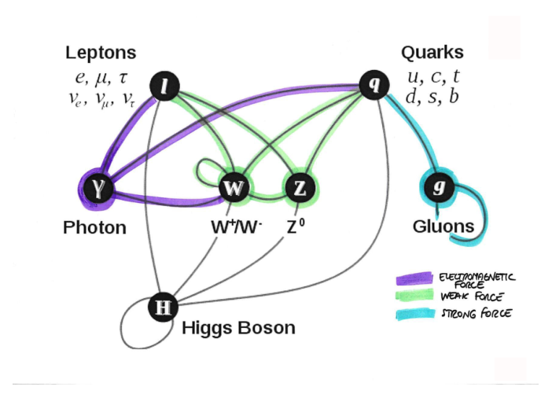
Figure 1: A graphical illustration of the SM interactions and forces.Figure 2 shows how different kinds of particles interact in a general-purpose detector like the ATLAS detector, and shows a cross-section of the ATLAS detector.
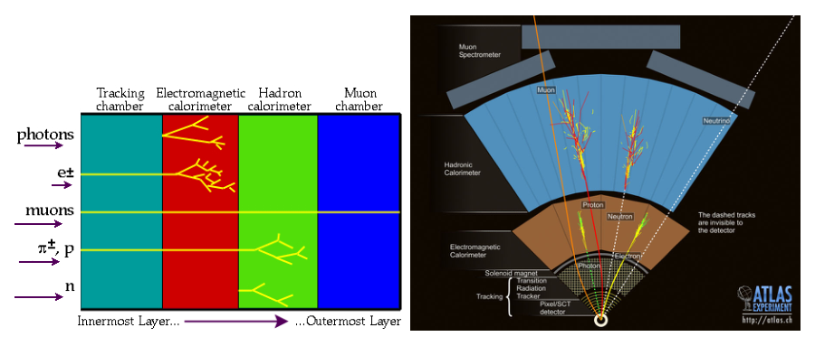
Figure 2: A graphical illustration of the particle interactions taking place in the ATLAS detector, together with a cross-section of the detector itself. Source: http://atlas.ch/ and http://www.particleadventure.org/1.1 The center of mass energy at which protons are collided at the Large Hadron Collider is . The average energy in Joule of a Wasa cracker is kilo calories (source: a packet of Wasa). is equivalent to calories. Use natural units, where and .
a) What is the LHC energy, in calories (assuming you could transform all of the cracker’s energy in kinetic energy you could give to a proton)?
b) How many Wasa crackers do you need to equate to the energy of an LHC collision?
c) Puzzled? How come the LHC is considered so powerful?
1.2 Classify the following particle reactions as strong, electromagnetic, weak, or impossible, based on the Standard Model interactions and conservation laws above. In each of the reactions, specify which particle mediates the force. Draw diagrams that connect initial state particles, force mediators and final state particles (“Feynman diagrams”), paying attention to the conservation laws at every junction (“vertex”). Note that the mediators of the interaction are not mentioned explicitly in the particle reactions below.
a)
b)
c)
d)
e)
f)
g)
1.3 The ATLAS detector is one of the main multi-purpose detectors at the Large Hadron Collider, currently it is operating at a centre of mass energy of for collisions.
Figures 3–6 are graphical depictions of real collision events recorded at the Large Hadron Collider (LHC) by the ATLAS detector in 2010 and 2012. It is not possible to exactly determine what happened, but select for each figure the most likely interaction that took place from the list below (note: there does not need to be a 1:1 correspondence), explaining your reasoning behind the choice, and mention which force is involved.
- candidate
- candidate
- candidate
- jets candidate (where a jet is a collimated stream of hadrons)
Hint: Ignore the underlying background processes, focus on the highlighted tracks. The dotted line refers to a track which, although not observed by the detector, is inferred by some energy imbalance in the event.
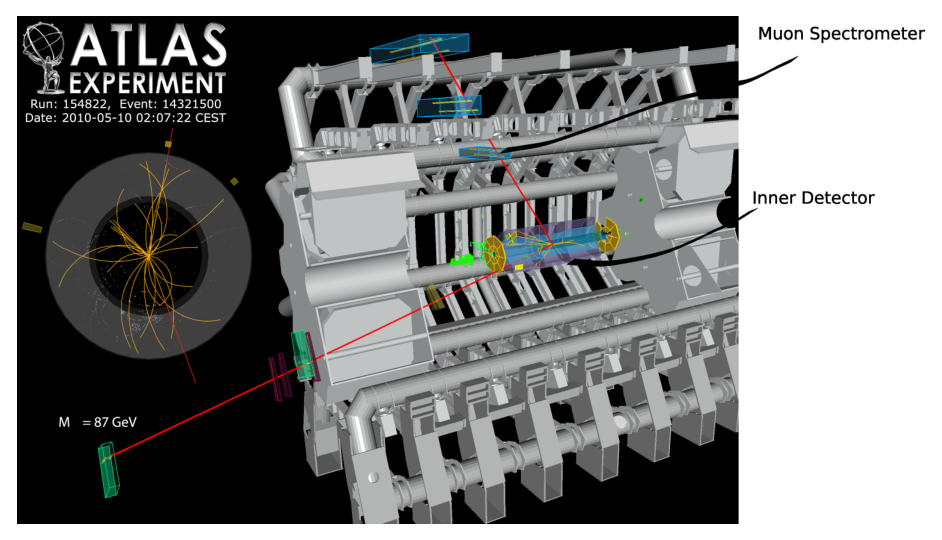
Figure 3: A graphical illustration of the ATLAS detector for Event 14321500, showing a 3D profile of the inner detector, magnets and muon spectrometers.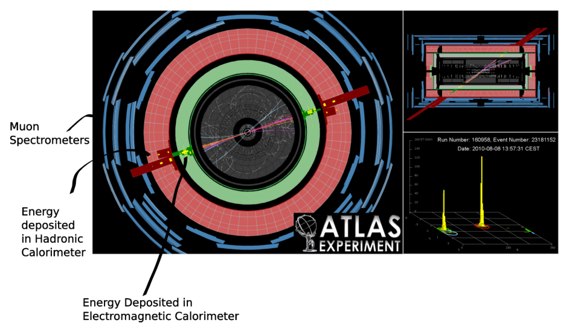
Figure 4: A graphical illustration of event 23181153. Left: view looking down the barrel, where the inner rings are the electromagnetic and hadronic calorimeters and the outer panels are the muon detectors. The tracks of interest are colored pink and the grey tracks are the background events. Top right: side view. Bottom right: energies recorded by the calorimeters against the track “angles” .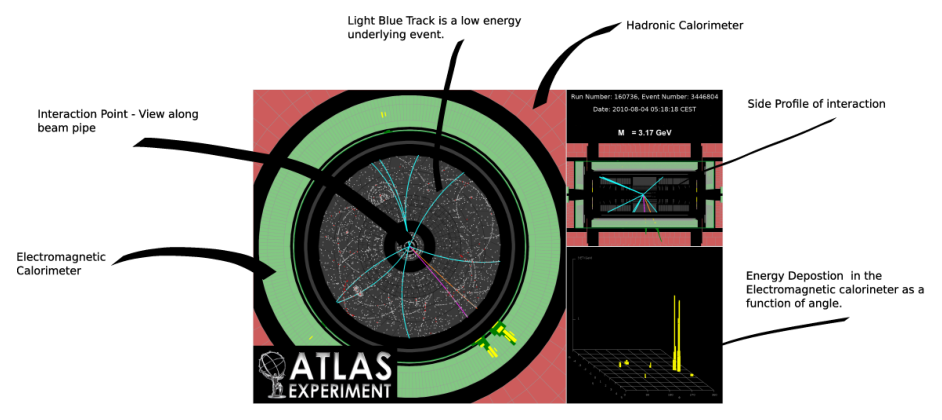
Figure 5: ATLAS event display. Left: view along the beam pipe, showing the tracks from the event and the detector calorimeters. Top right: a plot displaying the energies of the two tracks (in yellow) recorded in the calorimeters against their “angle” (pseudo-rapidity). Bottom right: looking down the barrel of the detector. The background tracks are colored blue.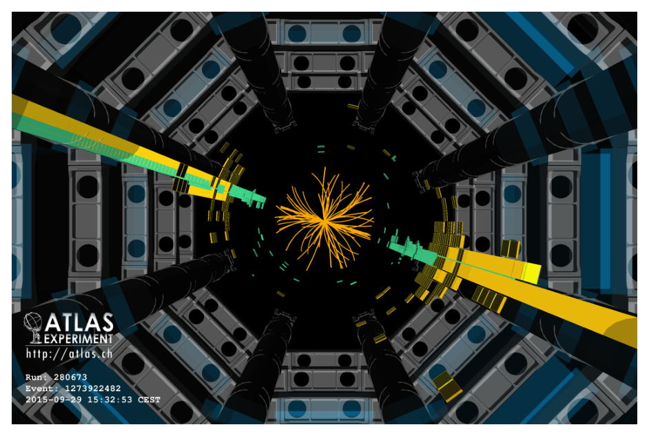
Figure 6: ATLAS event display. This is a 3D mid-way section of the ATLAS detector, also called view: what you see in shaded grey and black are the toroidal magnets and their support structures. The energy deposited in the electromagnetic and hadronic calorimeters is represented as yellow and green rectangles, of height proportional to the magnitude of the transverse momentum recorded by the calorimeters.Fonte: Testo (PDF) — p.5 Topic: Nuclear & Particle Physics, Order-of-Magnitude Estimation Metodi: Conservation Laws, Order-of-Magnitude Estimation, Symmetry Argument, Mass-Energy Equivalence Competenze: Physical Reasoning, Diagrammatic Reasoning, Unit Conversion Objects: Particle Beam
Fisica delle particelle (Caterina Doglioni & Peter Christiansen, Università di Lund)
Gli esercizi seguenti riguardano le particelle e le forze fondamentali del nostro universo. La teoria che useremo come quadro di base è il Modello Standard della fisica delle particelle. Tutto ciò di cui avrai bisogno per gli esercizi seguenti sono i diagrammi seguenti e un po’ di intuizione.
La figura 1 mostra uno schema delle particelle e delle interazioni all’interno del Modello Standard. Le particelle che interagiscono tra loro sono collegate da una linea. I diversi colori rappresentano forze diverse. Le particelle che sono mediatori delle forze hanno un confine più ampio dello stesso colore dell’interazione che mediano. Nell’interazione descritta dal Modello Standard, occorre conservare i seguenti numeri quantistici:
- numero di leptoni, dove i leptoni e i neutrini carichi hanno un numero di leptoni , dove è la famiglia (elettroni, muoni, tau);
- numero di barioni, in cui i barioni come i protoni, i neutroni, i pioni e i kaoni hanno un numero di barioni di e gli anti-barioni hanno un numero di barioni di ;
- Carica elettrica.
Figura 1: Una grafica illustrativa delle interazioni e delle forze SM.
La figura 2 mostra come diversi tipi di particelle interagiscono in un rilevatore di uso generale come il rilevatore ATLAS e mostra una sezione trasversale del rilevatore ATLAS.
Figura 2: Una illustrazione grafica delle interazioni di particelle che si verificano nel rilevatore ATLAS, insieme a una sezione trasversale del rilevatore stesso. Fonte: http://atlas.ch/ e http://www.particleadventure.org/
1.1 Il centro di energia di massa al quale i protoni si schiantano al Grande Collider ad adroni è . L’energia media in Joule di una cracker Wasa è di kilocalorie (fonte: un pacchetto di Wasa). è equivalente a calorie. Utilizzare unità naturali, dove e .
a) Qual è l’energia del LHC, in calorie (supponendo che si possa trasformare tutta l’energia del cracker in energia cinetica che si potrebbe dare a un protone)?
b) Quanti crackers Wasa è necessario per equipararsi all’energia di una collisione del LHC ?
c) Perplesso? Come mai il LHC è considerato così potente?
1.2 Le seguenti reazioni di particelle sono classificate come forti, elettromagnetiche, deboli o impossibili, in base alle interazioni del Modello Standard e alle leggi di conservazione di cui sopra. In ciascuna reazione, specificare quale particella media la forza. Disegnare diagrammi che collegano particelle di stato iniziale, mediatori di forza e particelle di stato finale (” diagrammi di Feynman”), prestando attenzione alle leggi di conservazione ad ogni giunzione (“vertice ”). Si noti che i mediatori dell’interazione non sono menzionati esplicitamente nelle reazioni di particelle di seguito.
a)
b)
c)
d)
e)
f)
g)
1.3 Il rilevatore ATLAS è uno dei principali rilevatori polivalenti del Grande Collider ad Adroni, attualmente opera in un centro di energia di massa di per le collisioni .
Le figure 36 sono raffigurazioni grafiche di eventi di collisione reali registrati al Large Hadron Collider (LHC) dal rilevatore ATLAS nel 2010 e 2012. Non è possibile determinare esattamente cosa è successo, ma selezionare per ogni figura l’interazione più probabile che ha avuto luogo dalla lista di seguito (nota: non è necessario che ci sia una corrispondenza 1: 1), spiegando il vostro ragionamento dietro la scelta, e menzionare quale forza è coinvolta.
- candidate
- candidate
- candidate
- candidato a getti (in cui un jet è un flusso di hadroni collimato)
Suggetta: Ignorare i processi di fondo sottostanti, concentrarsi sulle tracce evidenziate. La linea puntata si riferisce a una pista che, sebbene non sia osservata dal rilevatore, viene dedotta da qualche squilibrio energetico nell’evento.
Figura 3: Una grafica del rilevatore ATLAS per l’evento 14321500, che mostra un profilo 3D del rilevatore interno, dei magneti e degli spettrometri di muoni.
Figura 4: Un’illustrazione grafica dell’evento 23181153. Sinistra: vista che guarda verso il basso del barile, dove gli anelli interni sono i caloriometri elettromagnetici e adronici e i pannelli esterni sono i rilevatori di muoni. Le tracce di interesse sono di colore rosa e le tracce grigie sono gli eventi di fondo. Verso a destra: vista laterale. Sotto a destra: le energie registrate dai caloriometri contro gli “angoli” della pista .
Figura 5: visualizzazione degli eventi ATLAS. Sinistra: vista lungo il tubo del fascio, con le tracce dell’evento e i calorimetri del rilevatore. Superiore a destra: un diagramma che mostra le energie delle due tracce (in giallo) registrate nei caloriometri contro il loro “angolo” (pseudo-rapidità). Sotto a destra: guardare il barile del rilevatore. Le tracce di fondo sono di colore blu.
Figura 6: visualizzazione degli eventi ATLAS. Questa è una sezione di mezzo 3D del rilevatore ATLAS, chiamata anche vista : ciò che si vede in grigio e nero ombrati sono i magneti toroidali e le loro strutture di supporto. L’energia depositata nei caloriometri elettromagnetici e adronici è rappresentata come rettangoli gialli e verdi, di altezza proporzionale alla grandezza del momento trasversale registrato dai caloriometri.
Fonte: Testo (PDF) — p.5 Topic: Nuclear & Particle Physics, Order-of-Magnitude Estimation Metodi: Conservation Laws, Order-of-Magnitude Estimation, Symmetry Argument, Mass-Energy Equivalence Competenze: Physical Reasoning, Diagrammatic Reasoning, Unit Conversion Objects: Particle Beam
Nuclear / Neutron physics (Mario Villa, TU Vienna)
-
Calculate the energy per fission of one atom of uranium 235 (). How much energy can be obtained from one kg of ?
-
Compare this energy to the energy obtained by the fusion from a Deuterium () and a Tritium () atom. How much energy can be obtained by of the necessary isotopes?
The most common fission products of are and .
Required masses: , , , , , , . .
- Calculate the energy of a neutron scattered at a stationary nucleus with the weight . Consider a neutron with the energy in the laboratory (L) system incident upon a stationary nucleus of mass . Since the relative masses are important in the kinematics, we set the mass of the neutron and the mass of the nucleus . It is convenient to convert to the center-of-mass (CM) system as indicated in Fig. 1, because the elastic scattering event is isotropic in the CM system. Give the energy of the neutron after the scattering process.
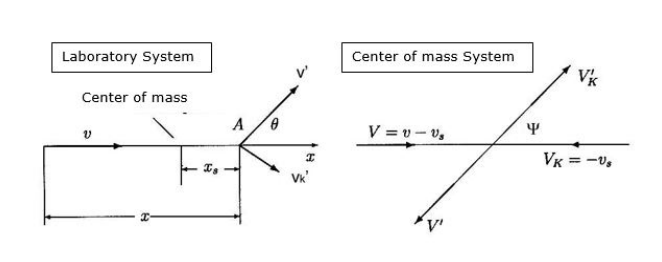
Figure 1: Scattering of a neutron at a nucleus. Lab system (L) and Center of mass (CMS) system.Fonte: Testo (PDF) — p.10 Topic: Nuclear & Particle Physics, Conservation of Momentum Metodi: Mass-Energy Equivalence, Conservation of Momentum, Conservation of Energy, Kinematic Equations Competenze: Physical Reasoning, Unit Conversion Objects: Nucleus
Fisica nucleare / neutroni *(Mario Villa, TU Vienna) *
-
Calcolare l’energia per fissione di un atomo di uranio 235 (). Quanto energia può essere ottenuta da un kg di ?
-
Confrontare questa energia con l’energia ottenuta dalla fusione da un atomo di deuterio () e di tritio (). Quanta energia può essere ottenuta da degli isotopi necessari?
I prodotti di fissione più comuni di sono e .
Masse richieste: , , , , , , . .
- Calcolare l’energia di un neutrone disperso in un nucleo stazionario con il peso . Considera un neutrone con l’energia nel sistema di laboratorio (L) che incide su un nucleo stazionario di massa . Poiché le masse relative sono importanti nella cinematica, impostamo la massa del neutrone e la massa del nucleo . È conveniente convertire al sistema di centro di massa (CM) come indicato nella figura. 1, perché l’evento di dispersione elastico è isotropo nel sistema CM. Date l’energia del neutrone dopo il processo di dispersione.
Figura 1: Scatter di un neutrone in un nucleo. Sistema di laboratorio (L) e sistema di centro di massa (CMS)
Fonte: Testo (PDF) — p.10 Topic: Nuclear & Particle Physics, Conservation of Momentum Metodi: Mass-Energy Equivalence, Conservation of Momentum, Conservation of Energy, Kinematic Equations Competenze: Physical Reasoning, Unit Conversion Objects: Nucleus
Solid state physics (Dirk van der Marel, University of Geneva)
I, Background: The color of a substance is caused by selective, i.e. frequency dependent, dissipation and dispersion of electromagnetic radiation. A vector potential oscillating at a frequency induces a current density at the same frequency. This is described by the linear relation , where is a complex frequency dependent function called “optical conductivity” which characterizes the optical properties of the substance. Throughout this problem set you may assume for simplicity that the electrons move in a one-dimensional space. The quantum theory of matter coupled to radiation provides the following expression for the real (dissipative) part of the optical conductivity \operatorname{Re}\sigma(\omega) = \operatorname{Re}\sigma(-\omega) = \frac{e^2}{V\hbar}\operatorname{Im}\int_0^\infty e^{i\omega t}\,\langle [\hat{x}(t), \hat{v}] \rangle\, dt \tag{1} where is the electron charge, the sample volume, and is an ensemble average over the Hamiltonian eigenstates of the substance. The position () and velocity () operators satisfy the equation of motion \hat{v}(t) = \frac{i}{\hbar}\big[\hat{H}, \hat{x}(t)\big] \tag{2} At time the Heisenberg representation yields and .
Question I: Show that the optical conductivity satisfies the following sum-rule \int_0^\infty \operatorname{Re}\sigma(\omega)\,d\omega = \frac{\pi e^2}{2V\hbar^2}\operatorname{Re}\big\langle \big[\hat{x}, [\hat{H}, \hat{x}]\big] \big\rangle \tag{3}
II, Background: The momentum operator and the position operator satisfy the Heisenberg uncertainty relation [\hat{x}, \hat{p}] = i\hbar \tag{4} Eq. (4) remains valid in a crystalline environment, but the set of eigenvalues of \hat{p}\,|q\rangle = q\,|q\rangle \tag{5} is confined to a finite interval, where is the lattice constant. In a metal in its simplest incarnation, one of the bands (the “conduction band”) is partially occupied with electrons and all other bands are either fully occupied or completely empty. The corresponding band-energies are the eigenvalues of the Hamiltonian operator \hat{H} = \varepsilon_c(\hat{p}) \tag{6} which in a solid environment is usually some complicated non-linear function of the momentum operator . In vacuum this reduces to the familiar expression , but in a solid environment the -dependence is different and varies strongly from one material to another. The optical conductivity has two types of contributions: \sigma(\omega) = \sigma_c(\omega) + \sigma_b(\omega) \tag{7} The current carried by the electrons in the conduction band described by Eq. (6) gives rise to the contribution , which corresponds to a zero-frequency mode with a finite width due to scattering. The finite-frequency (“bound charge”) contribution defined as , comes from optical transitions between the (fully and partly) occupied and (fully and partly) empty bands.
Question II: Assume that the substance contains a single electron, and that it occupies momentum eigenstate in the conduction band. Leave all other bands out of consideration and show with the help of Eqs. (3), (4) and (6) that satisfies \int_0^\infty \operatorname{Re}\sigma_c(\omega)\,d\omega = \frac{\pi e^2}{2V}\,\frac{\partial^2\varepsilon_c(q)}{\partial q^2} \tag{8}
III, Background: The many-electron generalization of Eq. (8) is a somewhat lengthy exercise which we are not asking you to do. It has the following result \int_0^\infty \operatorname{Re}\sigma_c(\omega)\,d\omega = \frac{\pi e^2}{2V}\sum_k n_c(k)\,\frac{\partial^2\varepsilon_c(k)}{\partial k^2} \tag{9} where is the average number of conduction electrons with momentum . In the limit of very high temperature, tends toward a -independent constant: .
Question III: Show that \lim_{T\to\infty}\int_0^\infty \operatorname{Re}\sigma_c(\omega)\,d\omega = 0 \tag{10}
IV, Background: However, since electrons can be thermally excited from one band to another, the restriction to a single band is not justified at finite temperature. In fact the following sum-rule for the full conductivity () holds for any temperature \int_0^\infty \operatorname{Re}\sigma(\omega)\,d\omega = \frac{\pi N e^2}{2 m_e V} \tag{11} where is the free electron mass and is the total number of electrons summed over all (partly or fully) occupied bands. Bismuth-antimony alloys are very interesting materials that exhibit a topological insulating phase for certain compositions. Pure bismuth is a semimetal, for which the main characteristics of the electronic structure are displayed in Figure 1 (an additional band of heavy hole carriers is left out of consideration for simplicity). The conduction band of these materials is characterized by a large value of the inverse effective mass , in other words . Since only a small number of -states are occupied, all having , the spectral weight of the zero-energy mode satisfies \int_0^\infty \operatorname{Re}\sigma_c(\omega)\,d\omega = \frac{\pi N_c e^2}{2 m_c V} \tag{12} where is the number of electrons in the conduction band.
Question IV: Given that , would nature allow a situation where the conduction band (red in Figure 1) would be the only band that is (partly or fully) occupied, implying that the blue band would be absent from Figure 1? Explain why or why not.
 Figure 2: Left: Single crystal of bismuth. Middle panel: Schematic of the two bands close to the Fermi energy which are the most relevant ones for the optical spectrum shown in the right hand panel: The conduction band (red) crosses the Fermi energy . A fully occupied band (blue) has its maximum about below . Right hand panel: Optical conductivity of bismuth. Note the presence of the zero-frequency mode, , below for (shifting to higher energy for higher temperatures). The rise in conductivity above corresponds to and is due to optical transitions between the two bands indicated in the middle panel.
Figure 2: Left: Single crystal of bismuth. Middle panel: Schematic of the two bands close to the Fermi energy which are the most relevant ones for the optical spectrum shown in the right hand panel: The conduction band (red) crosses the Fermi energy . A fully occupied band (blue) has its maximum about below . Right hand panel: Optical conductivity of bismuth. Note the presence of the zero-frequency mode, , below for (shifting to higher energy for higher temperatures). The rise in conductivity above corresponds to and is due to optical transitions between the two bands indicated in the middle panel.
Fonte: Testo (PDF) — p.11 Topic: Modern-Quantum Physics, Electromagnetism Metodi: Calculus-Integration, Statistical Averaging, Symmetry Argument, Physical Modeling Competenze: Mathematical Modeling, Physical Reasoning Objects: Electron
Fisica dello stato solido *
**I, Sottocondo: ** Il colore di una sostanza è causato da selective, cioè di frequenza, di dissipazione e di dispersione delle radiazioni elettromagnetiche. Un potenziale vettoriale oscillante a frequenza induce una densità di corrente alla stessa frequenza. Questo è descritto dalla relazione lineare , dove è una funzione complessa a frequenza dipendente chiamata “conduttività ottica” che caratterizza le proprietà ottiche della sostanza. In tutto questo insieme di problemi si può supporre per semplicità che gli elettroni si muovono in uno spazio unidimensionale. La teoria quantistica della materia accoppiata alla radiazione fornisce la seguente espressione per la parte reale (dissipativa) della conduttività ottica \operatorname{Re}\sigma(\omega) = \operatorname{Re}\sigma(-\omega) = \frac{e^2}{V\hbar}\operatorname{Im}\int_0^\infty e^{i\omega t}\,\langle [\hat{x}(t), \hat{v}] \rangle\, dt \tag{1} dove è la carica di elettroni, il volume del campione e è una media complessiva sugli stati propri hamiltoniani della sostanza. Gli operatori di posizione () e velocità () soddisfano l’equazione di movimento \hat{v}(t) = \frac{i}{\hbar}\big[\hat{H}, \hat{x}(t)\big] \tag{2} Nel tempo la rappresentazione di Heisenberg produce e .
Questa I: Dimostra che la conduttività ottica soddisfa la seguente regola sommata \int_0^\infty \operatorname{Re}\sigma(\omega)\,d\omega = \frac{\pi e^2}{2V\hbar^2}\operatorname{Re}\big\langle \big[\hat{x}, [\hat{H}, \hat{x}]\big] \big\rangle \tag{3}
**II, Sottocfronto: ** L’operatore di impulso e l’operatore di posizione soddisfano la relazione di incertezza di Heisenberg [\hat{x}, \hat{p}] = i\hbar \tag{4} Eq. (4) rimane valida in un ambiente cristallino, ma l’insieme dei valori propri di \hat{p}\,|q\rangle = q\,|q\rangle \tag{5} è confinato ad un intervallo finito, , dove è la costante della rete. In un metallo nella sua più semplice incarnazione, una delle bande (la “banda di condotta”) è parzialmente occupata da elettroni e tutte le altre bande sono completamente occupate o completamente vuote. Le corrispondenti energie di banda sono i valori propri dell’operatore hamiltoniano \hat{H} = \varepsilon_c(\hat{p}) \tag{6} che in un ambiente solido è di solito una complessa funzione non lineare dell’operatore di impulso . In vuoto si riduce a , ma in un ambiente solido la dipendenza è diversa e varia fortemente da un materiale all’altro. La conducibilità ottica ha due tipi di contributi: \sigma(\omega) = \sigma_c(\omega) + \sigma_b(\omega) \tag{7} La corrente trasportata dagli elettroni nella banda di conduzione descritta da Eq. (6) dà luogo al contributo , che corrisponde a una modalità a frequenza zero con larghezza finita a causa della dispersione. Il contributo di frequenza finita (“carica vincolata”) definito come , deriva da transizioni ottiche tra le bande (interamente e parzialmente) occupate e (interamente e parzialmente) vuote.
**Questione II: ** Supponiamo che la sostanza contenga un singolo elettrone e che occupi un stato di impulso proprio nella banda di conduzione. Lascia tutte le altre band fuori considerazione e mostra con l’aiuto di Eqs. 3, 4 e 6 che soddisfa \int_0^\infty \operatorname{Re}\sigma_c(\omega)\,d\omega = \frac{\pi e^2}{2V}\,\frac{\partial^2\varepsilon_c(q)}{\partial q^2} \tag{8}
**III, Sottopiede: ** La generalizzazione multi-elettronica di Eq. (8) è un’attività piuttosto lunga che non vi chiediamo di fare. Ha il seguente risultato: \int_0^\infty \operatorname{Re}\sigma_c(\omega)\,d\omega = \frac{\pi e^2}{2V}\sum_k n_c(k)\,\frac{\partial^2\varepsilon_c(k)}{\partial k^2} \tag{9} in cui è il numero medio di elettroni di conduttività con impulso . Nel limite di temperatura molto elevata, tende verso una costante indipendente da : .
**Questione III: ** Mostra che \lim_{T\to\infty}\int_0^\infty \operatorname{Re}\sigma_c(\omega)\,d\omega = 0 \tag{10}
**IV, Sostenibile: ** Tuttavia, poiché gli elettroni possono essere eccitati termicamente da una banda all’altra, la limitazione a una singola banda non è giustificata a temperatura finita. Infatti la seguente regola somma per la piena conducibilità () si applica a qualsiasi temperatura \int_0^\infty \operatorname{Re}\sigma(\omega)\,d\omega = \frac{\pi N e^2}{2 m_e V} \tag{11} in cui è la massa degli elettroni liberi e è il numero totale di elettroni sommato su tutte le bande occupate (parzialmente o completamente). Le leghe di bismuto-antimonio sono materiali molto interessanti che presentano una fase isolante topologica per determinate composizioni. Il bismuto puro è un semimetalo, per il quale le principali caratteristiche della struttura elettronica sono illustrate nella figura 1 (un’ulteriore fascia di portatori di buchi pesanti è esclusa per semplicità). La banda di conduzione di questi materiali è caratterizzata da un grande valore della massa effettiva inversa , in altre parole . Poiché solo un piccolo numero di stati sono occupati, tutti , il peso spettrale della modalità di energia zero soddisfa \int_0^\infty \operatorname{Re}\sigma_c(\omega)\,d\omega = \frac{\pi N_c e^2}{2 m_c V} \tag{12} dove è il numero di elettroni nella banda di conduzione.
**Questa IV: ** Dato che , la natura consentirebbe una situazione in cui la banda di conduttività (rossa nella Figura 1) sarebbe l’unica banda occupata (parzialmente o completamente), implicando che la banda blu sarebbe assente dalla Figura 1? Spiegate il perché o il perché no.
Figura 2: Sinistra: cristallo unico di bismuto. Pannello medio: Schema delle due bande vicine all’energia Fermi che sono le più rilevanti per lo spettro ottico mostrato nel pannello destro: la banda di conduzione (rosso) attraversa l’energia Fermi . Una banda completamente occupata (blu) ha il suo massimo di circa inferiore a . Pannello a destra: conduttività ottica del bismuto. Si noti la presenza della modalità di frequenza zero, , sotto per (scensione ad energia superiore per temperature più elevate). L’aumento della conductività superiore a corrisponde a e è dovuto a transizioni ottiche tra le due bande indicate nel pannello centrale.*
Fonte: Testo (PDF) — p.11 Topic: Modern-Quantum Physics, Electromagnetism Metodi: Calculus-Integration, Statistical Averaging, Symmetry Argument, Physical Modeling Competenze: Mathematical Modeling, Physical Reasoning Objects: Electron
Two accelerating locomotives connected by a tin-can-telephone (Anton Rebhan, TU Vienna)
On a very long straight railway, two locomotives are about to get moving in the same direction at relativistic speeds by igniting a series of high-power fuel (Presto Logs aka Superzündis)1, each of which will instantaneously increase their velocity by the same amount with respect to their present inertial frame. The two locomotives are separated by a clear space of light-nanoseconds (lns) over which a rubber thread is spanned, connecting the two ends of a tin-can-telephone, which only works when the rubber thread has been stretched to its maximal length of , but the thread would break if kept stretched any amount beyond that after the acceleration phase.2
The train drivers (Doc and Marty) are equipped with perfectly accurate and synchronized clocks. They will ignite their presto logs according to the time table given to them. The aim is that they reach more than of and that the thread between them does not break and is in place for a tin-can-communication (through which the drivers can compare their clock readings when moving peacefully at their final velocity).
It is clear (at least to Doc) that they cannot just ignite their presto logs at exactly the same time as given by their respective clocks. Explain why!
Marty, the driver in the first (front) locomotive is instructed to ignite his set of presto logs every seconds after on his clock. Work out
(a) how many presto logs each train driver minimally needs,
(b) exactly when the logs in the second (behind) locomotive have to be ignited by Doc,
(c) what is the time difference that Doc and Marty find when comparing their clocks over the tin-can-telephone (assuming that they know exactly the velocity of sound in their telephone cable so that they can accurately subtract the obvious delays in their communication).
Fonte: Testo (PDF) — p.14 Topic: Special Relativity, Mathematics Metodi: Lorentz Transformation, Relativistic Energy-Momentum, Physical Modeling Competenze: Physical Reasoning, Mathematical Modeling Objects: String
**Due locomotive ad acceleratore collegate da un telefono a contenitore ** *(Anton Rebhan, TU Vienna) *
Su una lunga ferrovia retta, due locomotive stanno per iniziare a muoversi nella stessa direzione a velocità relativistiche accendendo una serie di combustibili ad alta potenza (Presto Logs aka Superzündis) 1, ognuna delle quali aumenterà istantaneamente la loro velocità della stessa quantità rispetto al loro quadro inerziale attuale. Le due locomotive sono separate da uno spazio chiaro di nanosecondi di luce (lns) su cui è speso un filo di gomma, collegando le due estremità di un telefono in latta, che funziona solo quando il filo di gomma è stato allungato alla sua lunghezza massima di , ma il filo si romperà se tenuto allungato qualsiasi quantità oltre che dopo la fase di accelerazione.
I conducenti del treno (Doc e Marty) sono dotati di orologi perfettamente precisi e sincronizzati. Incendieranno i loro registri presto secondo la tabella di tempo che gli è stata data. L’obiettivo è che raggiungano più di di e che il filo tra loro non si rompa e sia in funzione di una comunicazione in scatola di latta (con la quale i conducenti possono confrontare le loro letture di orologio quando si muovono pacificamente alla loro velocità finale).
È chiaro (almeno per Doc) che non possono accendere i loro registri presto nello stesso momento di quelli dei rispettivi orologi. Spiegami il motivo!
Marty, il conducente della prima locomotiva (front) viene istruito a accendere il suo set di registri presto ogni secondi dopo sul suo orologio. - Esercizio fisico
- quante ore di presto ogni conducente di treno ha bisogno di almeno,
b) esattamente quando i tronchi della seconda locomotiva (arrivo) devono essere accesi da Doc,
(c) quale è la differenza di tempo che Doc e Marty trovano quando confrontano i loro orologi con il telefono a telaio (supponendo che conoscano esattamente la velocità del suono nel cavo telefonica in modo da poter sottrarre con precisione gli ovvi ritardi nella loro comunicazione).
Fonte: Testo (PDF) — p.14 Topic: Special Relativity, Mathematics Metodi: Lorentz Transformation, Relativistic Energy-Momentum, Physical Modeling Competenze: Physical Reasoning, Mathematical Modeling Objects: String
Carnot cycle with van-der-Waals gas (Robert Enzinger, TU Graz)
We are looking at a Carnot cycle (adiabatic-isothermal thermodynamic cycle) with a van-der-Waals (vdW) gas as working medium.
At the start point (1), the gas has a reduced temperature of , its reduced (specific) volume is . In the first step, the gas is (isothermally) expanded to twice its starting volume, with the endpoint of the subsequent adiabatic step being on the critical isothermal line. The specific heat capacity (at constant volume) is given by , so .
Hint: The vdW gas equation is given by , where gives the average attraction between particles and is the volume of a mole of particles. It is characterized by the critical point with coordinates , where , and . The reduced quantities are given by , and .
(a) For an adiabatic process with a vdW gas, the following relation between temperature and specific volume holds: T^{c_v}(v - b) = \text{const} \tag{1} Express this equation and the vdW equation only as a function of the reduced quantities.
(b) Explicitly calculate the reduced quantities in every point of the cycle.
(c) Sketch the process qualitatively into the -diagram below. The critical point on the critical isothermal line alongside with other isothermal lines are already plotted.
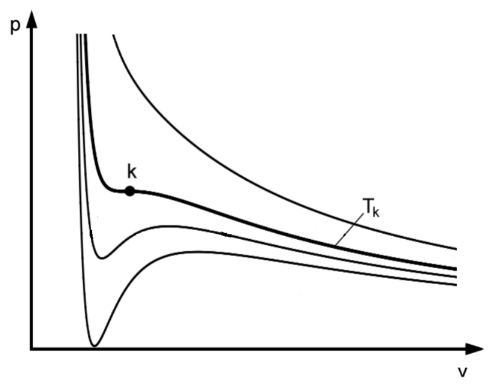
The -diagram: critical point on the critical isothermal line , with other isothermal lines plotted.In the following points, calculate with the non-reduced quantities:
(d) Derive the formulae for exchanged specific heat quantities for every step. Hint: The differential for the (specific) internal energy for the vdW gas is given by . Use the first law of thermodynamics.
(e) Give a formula for the efficiency of the thermodynamic cycle only as a function of the specific volumina and temperatures of the corner points. Show that this efficiency is the same as the efficiency of a Carnot cycle working with the ideal gas between the same temperature difference.
Fonte: Testo (PDF) — p.15 Topic: Thermodynamics, Kinetic Theory Metodi: Thermodynamic Cycle Analysis, First Law of Thermodynamics, Ideal Gas Law, Calculus-Integration Competenze: Mathematical Modeling, Diagrammatic Reasoning Objects: Gas, Heat Engine
Cicco di carnot con gas van-der-Waals (Robert Enzinger, TU Graz)
Si tratta di un ciclo di Carnot (ciclo termodinamico adiabatico-isotermale) con gas van-der-Waals (vdW) come mezzo di lavoro.
Al punto di partenza (1), il gas ha una temperatura ridotta di , il suo volume ridotto (specifico) è . Nel primo passo il gas viene esteso (isotermicamente) al doppio del suo volume di partenza, con il punto finale del successivo passo adiabatico sulla linea isotermica critica. La capacità termico specifica (a volume costante) è data da , quindi .
Signore: L’equazione vdW del gas è data da , dove dà l’attrazione media tra le particelle e è il volume di una mole di particelle. È caratterizzato dal punto critico con le coordinate , dove , e . I quantitativi ridotti sono indicati con , e .
a) Per un processo adiabatico con gas vdW, la seguente relazione tra temperatura e volume specifico è: T^{c_v}(v - b) = \text{const} \tag{1} Esprimere questa equazione e l’equazione vdW solo come funzione delle quantità ridotte.
b) Calcolare esplicitamente le quantità ridotte in ogni punto del ciclo.
c) Sniciare qualitativamente il processo nel diagramma di seguito. Il punto critico sulla linea isotermica critica è già tracciato insieme ad altre linee isotermiche.
Il diagramma : punto critico sulla linea isotermica critica , con altre linee isotermiche tracciate.
I seguenti punti sono calcolati con i quantitativi non ridotti:
d) Derivare le formule per i quantitativi di calore specifici scambiati per ogni fase. Signore: Il differenziale per l’energia interna (specifica) del gas vdW è dato da . Utilizzare la prima legge della termodinamica.
e) Indicare una formula per l’efficienza del ciclo termodinamico solo in funzione del volume specifico e delle temperature dei punti angolari. Mostrare che questa efficienza è la stessa di un ciclo Carnot che lavora con il gas ideale tra la stessa differenza di temperatura.
Fonte: Testo (PDF) — p.15 Topic: Thermodynamics, Kinetic Theory Metodi: Thermodynamic Cycle Analysis, First Law of Thermodynamics, Ideal Gas Law, Calculus-Integration Competenze: Mathematical Modeling, Diagrammatic Reasoning Objects: Gas, Heat Engine
Crystal geometry (Roland Resel, TU Graz)
8.1 Part A — Cairo Tiling
For the Cairo tiling a two-dimensional plane is fully filled by pentagons. The geometry of a single pentagon is formed by four identical side lengths (blue colour) and one different side length (red colour) and angles of and (see Fig. 1).
(a) Determine the 2D Bravais lattice of the Cairo tiling.
(b) Draw the unit cell vectors and and the enclosed angle .
(c) Give a derivation (or an argument) for the given angle .
(d) How many tiles are within one unit cell?
(e) Determine the 2 dimensional wallpaper group of the Cairo tiling. All possible wallpaper groups are given in Fig. 2.
A Bravais lattice is an infinite array of discrete points which are generated by a set of discrete translation vectors which are multiples of the unit cell vectors and . The tiling has to be reproduced by the assignment of a set of tiles to each lattice point of the Bravais lattice.
The five existing 2D Bravais lattices:
- cubic: ,
- hexagonal: ,
- rectangular: ,
- rectangular centered: , and two lattice points per unit cell
- oblique: ,
Priority rules to determine 2D Bravais lattices: i. Highest symmetry (cubic > hexagonal > rectangular > oblique) ii. Smallest unit cell area iii. Smallest lattice constants and iv. ,
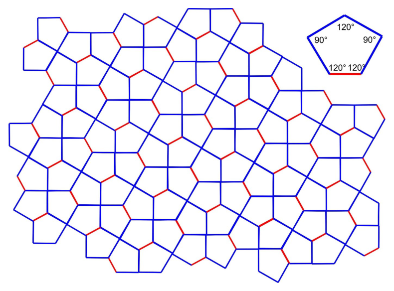
Figure 1: Cairo Tiling.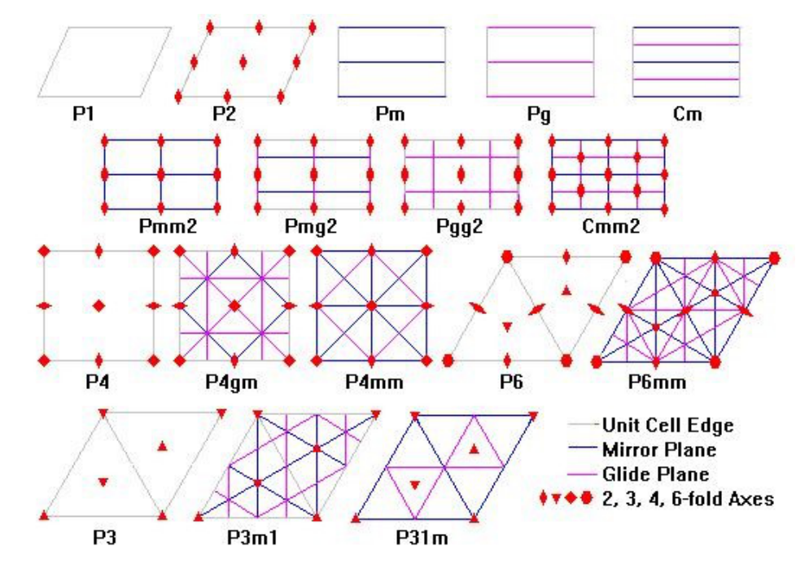
Figure 2: The 17 possible wallpaper groups. P … Primitive lattice; C … Centered lattice.8.2 Part B — Trihex Tiling
For the triangle/hexagon tiling (TriHex) a two-dimensional plane is fully filled by two different types of tiles: one type of tile is a regular triangle and the second type of tile is a hexagon. Two different side lengths are involved: blue and red with a length ratio of , respectively. The arrangement of the tiles are given by Fig. 3.
As in Part A, determine the points (a)–(e) for the Trihex Tiling.
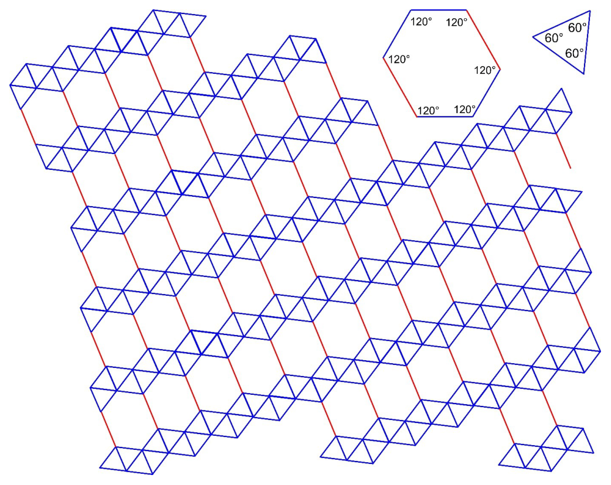
Figure 3: TriHex Tiling.Fonte: Testo (PDF) — p.17 Topic: Modern-Quantum Physics, Mathematics Metodi: Symmetry Argument, Physical Modeling, Vector Decomposition Competenze: Diagrammatic Reasoning, Physical Reasoning Objects: —
Geometria dei cristalli *(Roland Resel, TU Graz) *
8.1 Parte A Cairo Tiling
Per il Cairo, un piano bidimensionale è pieno di pentagoni. La geometria di un singolo pentagono è costituita da quattro lunghezze laterali identiche (colore blu) e da una lunghezze laterali diverse (colore rosso) e da angoli di e (vedi figura 1. 1).
- Determinazione della rete 2D Bravais della piastra del Cairo.
b) Disegnare i vettori delle celle unità e e l’angolo chiuso .
c) Fornisce una derivazione (o un argomento) per l’angolo .
d) Quante piastrelle si trovano in una cella?
e) Determinare il gruppo di carta da parati bidimensionale del tessuto del Cairo. Tutti i possibili gruppi di carta da parati sono indicati in Figura 1. 2.
Una rete di Bravais è un’insieme infinita di punti discreti generati da un insieme di vettori di traduzione discreti che sono multipli dei vettori di cellula unità e . La tessitura deve essere riprodotta assegnando un insieme di tessere a ciascun punto della rete di Bravais.
Le cinque reti Bravais 2D esistenti:
- cubic: ,
- esagonale: ,
- rettangolare: ,
- centro rettangolare: , e due punti di reticolare per cellula unità
- obliqua: ,
Regole di priorità per la determinazione delle reti 2D Bravais: i. Sistemi di controllo di controllo di controllo ii. Piu’ piccola superficie di cellula iii. Le costanti più piccole della rete e iv. ,
Figura 1: Tiling del Cairo.
Figura 2: I 17 possibili gruppi di carta da parati. P … Rete primitiva; C … Rete centralizzata.*
8.2 Parte B Tiling Trihex
Per il triangolo/esagono (TriHex) un piano bidimensionale è completamente riempito da due tipi diversi di piastrelle: un tipo di piastrella è un triangolo regolare e il secondo tipo di piastrella è un esagono. Sono coinvolti due lunghezze laterali diverse: blu e rosso con un rapporto di lunghezza rispettivamente di . L’arredamento delle piastrelle è indicato in Fig. 3.
Come nella parte A, determinare i punti (a) (e) per il Tiling Trihex.
Figura 3: Tiling TriHex.
Fonte: Testo (PDF) — p.17 Topic: Modern-Quantum Physics, Mathematics Metodi: Symmetry Argument, Physical Modeling, Vector Decomposition Competenze: Diagrammatic Reasoning, Physical Reasoning Objects: —
Spin Qubits (Enrico Arrigoni, TU Graz)
Hint: This problem should not be addressed by brute force. It is very useful to take into account spin rotation invariance.
In particular, when combining two systems described by angular momenta and , then one can choose a basis of eigenvectors of and , where is the total angular momentum operator. Also think how is related to the scalar product .
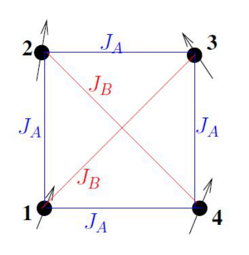
Figure 1: Setup consisting of four spin- particles.Consider a qubit setup consisting of four spin- particles in a square arrangement (see Fig. 1). We work in units with .
The Hamiltonian of the system is: H = \frac{1}{2}\sum_{i \neq j} J_{ij}\,\vec{S}_i \cdot \vec{S}_j \tag{1} where \vec{S}_j = \left( S^x_j, S^y_j, S^z_j \right) \tag{2} denotes the three components of the quantum mechanical spin operator3 of particle (), and the dot "" denotes scalar product over these components. The coupling constants can have the values or according to the figure.
Consider first the case , :
(i) Determine the energy and degeneracy of the ground state of Hamiltonian from (1).
The system is prepared at in a state consisting of all spins oriented in the direction. At the same time a magnetic field, described by the Hamiltonian H_B = -B\sum_{i=1}^{4} S^z_i \tag{3} is applied in the direction.
(ii) How long does it take for the system to go back to the state with all spins oriented in the direction?
(iii) Determine the time dependence of the magnetisation in the direction, where M^\alpha \equiv \langle S^\alpha_{\text{tot}} \rangle, \qquad S^\alpha_{\text{tot}} \equiv \sum_{i=1}^{4} S^\alpha_i, \qquad \alpha = x, y, z. \tag{4} and the expectation value is taken with respect to the above-mentioned time-dependent state.
We now go back to the Hamiltonian from (1) (without magnetic field (Eq. (3))):
(iv) For the case , determine all eigenvalues of as well as their degeneracies.
(v) Consider now the case , but small enough4. Determine again all eigenvalues of Eq. (1) as well as their degeneracies.
From now on we consider the case , and :
(vi) Consider again the action of a magnetic field, (3). Determine the magnetic susceptibility \chi \equiv \left.\frac{dM^z}{dB}\right|_{B=0} \tag{5} where the expectation value in Eq. (4) is carried out with respect to the ground state of .
(vii) Consider now and a magnetic field applied to the first spin only, described by the Hamiltonian H_{\text{loc}} = -b\,S^z_1. \tag{6} Determine the local susceptibility \chi_{\text{loc}} \equiv \left.\frac{dm^z}{db}\right|_{b=0} \tag{7} where m^z \equiv \langle S^z_1 \rangle \tag{8} and the expectation value is evaluated with respect to the ground state of (no !).
Fonte: Testo (PDF) — p.20 Topic: Modern-Quantum Physics, Magnetism Metodi: Symmetry Argument, Torque & Angular Momentum Analysis, Superposition Principle, Statistical Averaging Competenze: Mathematical Modeling, Physical Reasoning Objects: —
Spin Qubits *(Enrico Arrigoni, TU Graz) *
Signore: Questo problema non deve essere affrontato con la forza brutale. È molto utile tenere conto dell’invarianza di rotazione dello spin.
In particolare, quando si combinano due sistemi descritti dai momenti angolari e , si può scegliere una base di vetori propri di e , dove è l’operatore di momentum angolare totale. Pensate anche a come sia correlato al prodotto scalare .
Figura 1: Impostazione costituita da quattro particelle spin-.
Considera una configurazione di qubit composta da quattro particelle spin- in un’arrangimento quadrato (vedi figura. 1). Lavoriamo in unità con .
L’amiltoniano del sistema è: H = \frac{1}{2}\sum_{i \neq j} J_{ij}\,\vec{S}_i \cdot \vec{S}_j \tag{1} dove \vec{S}_j = \left( S^x_j, S^y_j, S^z_j \right) \tag{2} indica le tre componenti dell’operatore di spin meccanico quantistico3 della particella (), e il punto "" indica il prodotto scalare su questi componenti. Le costanti di accoppiamento possono avere i valori o a seconda della figura.
Considerate in primo luogo il caso , :
- Determinare l’energia e la degenerazione dello stato di base di Hamiltonian a partire da (1).
Il sistema è preparato a in uno stato composto da tutte le rotazioni orientate nella direzione . Allo stesso tempo un campo magnetico, descritto dall’Hamiltoniano H_B = -B\sum_{i=1}^{4} S^z_i \tag{3} viene applicato nella direzione .
(ii) Quanto tempo ci vuole per il sistema di tornare allo stato con tutti i giri orientati nella direzione ?
- Determinare la dipendenza temporale della magnetizzazione nella direzione , quando M^\alpha \equiv \langle S^\alpha_{\text{tot}} \rangle, \qquad S^\alpha_{\text{tot}} \equiv \sum_{i=1}^{4} S^\alpha_i, \qquad \alpha = x, y, z. \tag{4} e il valore di attesa viene preso per quanto riguarda lo stato di dipendenza temporale sopra indicato.
Torniamo ora all’Hamiltoniano da (1) (senza campo magnetico (Eq. (3))):
(iv) Per il caso , determinare tutti i valori propri di e le loro degenerazioni.
(v) Considerate ora il caso , ma abbastanza piccolo4. Determina di nuovo tutti i valori propri di Eq. (1) nonché le loro degenerazioni.
Da ora in poi consideriamo i casi , e :
(vi) Riguardo l’azione di un campo magnetico (3). Determinare la sensibilità magnetica \chi \equiv \left.\frac{dM^z}{dB}\right|_{B=0} \tag{5} in cui il valore di attesa in Eq. (4) viene effettuata per lo stato di base di .
(vii) Considerate ora e un campo magnetico applicato solo alla prima spina, descritto dal Hamiltonian H_{\text{loc}} = -b\,S^z_1. \tag{6} Determina la sensibilità locale \chi_{\text{loc}} \equiv \left.\frac{dm^z}{db}\right|_{b=0} \tag{7} dove m^z \equiv \langle S^z_1 \rangle \tag{8} e il valore di attesa viene valutato rispetto allo stato di base di (nessun !).
Fonte: Testo (PDF) — p.20 Topic: Modern-Quantum Physics, Magnetism Metodi: Symmetry Argument, Torque & Angular Momentum Analysis, Superposition Principle, Statistical Averaging Competenze: Mathematical Modeling, Physical Reasoning Objects: —
Tribute to Joseph Ritter von Fraunhofer (Markus Koch & Andreas Hauser, TU Graz)
10.1 Part A — Fraunhofer diffraction — The single slit
(a) Calculate the distribution of the electrical field as well as the intensity (irradiance) behind a single slit as function of the angle in the Fraunhofer limit (), according to Fig. 1. The slit width is ( direction) and the slit is assumed to be indefinitely long ( direction). Hint: Use the expansion .
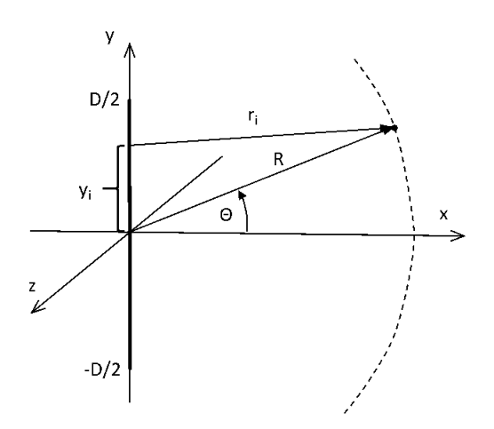
Figure 1: The single slit.(b) Sketch the intensity distribution.
10.2 Part B — Fraunhofer lines D1 and D2 — The sodium doublet
The Fraunhofer lines D1 and D2 appear as dark features (absorption lines) in the spectrum of the sun (Fig. 2). The D1 line, which is higher in energy, is found at .
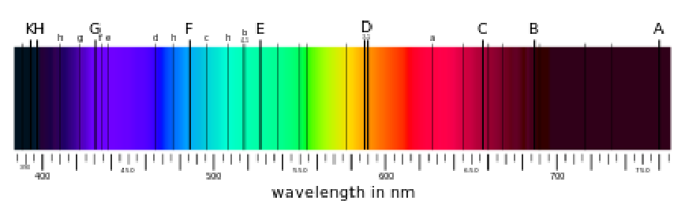
Figure 2: Spectrum of the sun.The semiclassical derivation of the spin-orbit coupling in atoms is based on a coordinate transformation into the rest frame of the valence electron. In this picture, an orbiting (singly charged) ion creates a field felt by the valence electron. In this -field, the magnetic momentum of the electron, coupled to the electron spin via , gives rise to an energy contribution , which is known as spin-orbit interaction energy. A factor needs to be added here due to the incorrect assumption of a linear motion of the electron in the transformation (Thomas-Factor).
Important quantities:
(a) Write as a function of the angular momentum and the spin of the valence electron. Introduce the total angular momentum and try to find an expression for where the operators can be replaced by their corresponding quantum numbers , and . The radius of the th orbit can be estimated via Bohr’s ansatz with and .
(b) With this formula, calculate the energy difference between the D1 and the D2 line of sodium in . This splitting is a consequence of the SO-coupling in an electronically excited state of sodium where the orbital is singly occupied.
Fonte: Testo (PDF) — p.22 Topic: Wave Optics, Modern-Quantum Physics Metodi: Interference & Diffraction Analysis, Bohr Model & Quantization, Small-Angle Approximation, Calculus-Integration Competenze: Physical Reasoning, Mathematical Modeling Objects: Slit, Screen, Electron
“Merci per il nostro lavoro”
10.1 Parte A Fraunhofer diffrazione La singola fessura
a) Calcolare la distribuzione del campo elettrico e l’intensità (irradianza) dietro una singola fessura in funzione dell’angolo nel limite Fraunhofer (), secondo la figura. 1. La larghezza della fessura è (direzione ) e si presume che la fessura sia indefinitamente lunga (direzione ). *Suggetta: * Utilizzare l’espansione .
Figura 1: La singola fessura.
b) Sfoglio della distribuzione dell’intensità.
10.2 Parte B Fraunhofer linee D1 e D2 Il doppio di sodio
Le linee Fraunhofer D1 e D2 appaiono come caratteristiche scure (linee di assorbimento) nello spettro solare (Fig. 2). La linea D1, che è più elevata in energia, si trova a .
Figura 2: Spettro solare.
La derivazione semiclassica del congiuntura spin-orbita negli atomi si basa su una trasformazione delle coordinate nel cornice di riposo dell’elettrone di valenza. In questa immagine, un ione in orbita (unicargiato) crea un campo sentito dall’elettrone di valenza. In questo campo , il momento magnetico dell’elettrone, accoppiato allo spin dell’elettrone attraverso , dà luogo a un contributo energetico , noto come energia di interazione spin-orbita. Qui è necessario aggiungere un fattore a causa dell’ipotesi erronea di un movimento lineare dell’elettrone nella trasformazione (Thomas-Factor).
Quantità importanti:
a) Scrivere come funzione del momento angolare e dello spin dell’elettrone di valenza. Introduci il momento angolare totale e cerca di trovare un’espressione per in cui gli operatori possono essere sostituiti dai loro numeri quantistici corrispondenti , e . Il raggio di th orbita può essere stimato tramite l’ansatz di Bohr con e .
b) Con questa formula calcolare la differenza di energia tra la linea D1 e D2 di sodio in . Questa divisione è una conseguenza del coppiaggio di SO in uno stato di sodio elettricamente eccitato in cui l’orbita è occupata singolo.
Fonte: Testo (PDF) — p.22 Topic: Wave Optics, Modern-Quantum Physics Metodi: Interference & Diffraction Analysis, Bohr Model & Quantization, Small-Angle Approximation, Calculus-Integration Competenze: Physical Reasoning, Mathematical Modeling Objects: Slit, Screen, Electron
Footnotes
-
That is, ignore the stress from shock waves caused by the sudden acceleration of the ends of the rubber thread (just assume that it never slacks and that it is also robust under any transitory local deformation that may occur when pushed or pulled from one end until everything is settled in a new inertial frame). Also neglect the size of the locomotives and consider them pointlike. ↩
-
We always consider small enough such that there are neither level crossings nor accidental degeneracies. ↩ ↩2